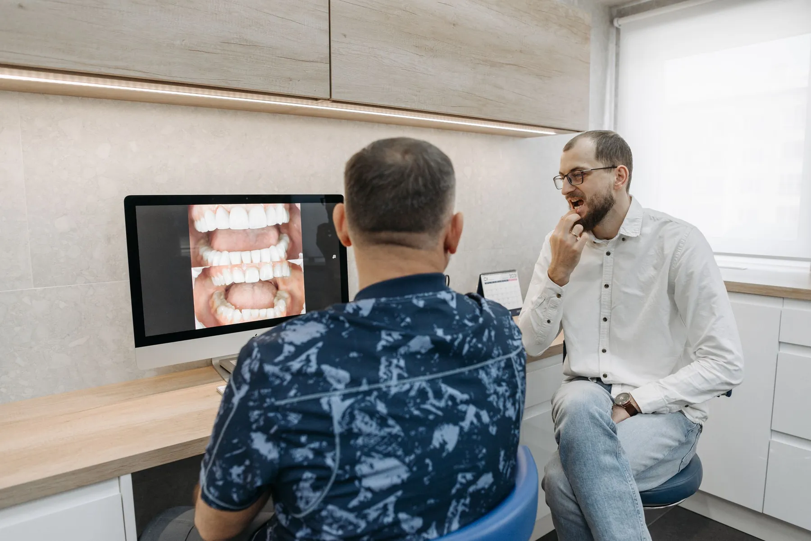
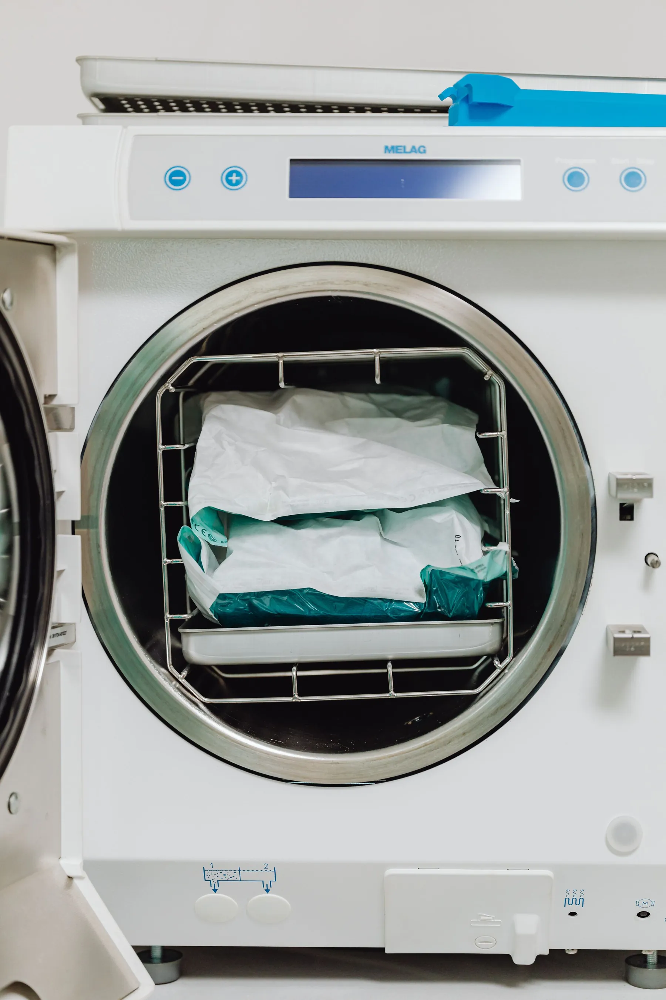
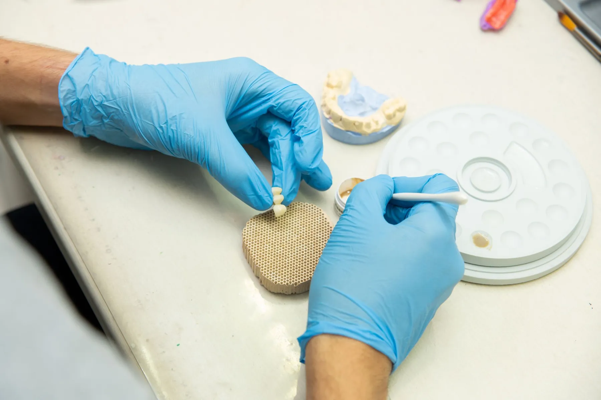
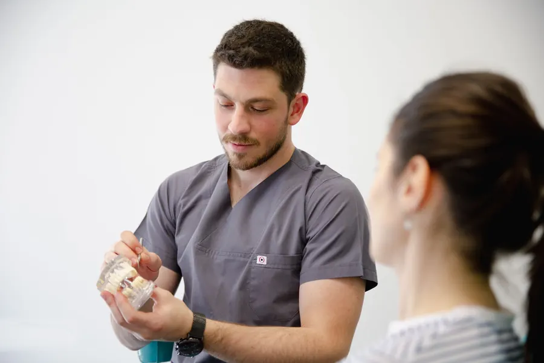
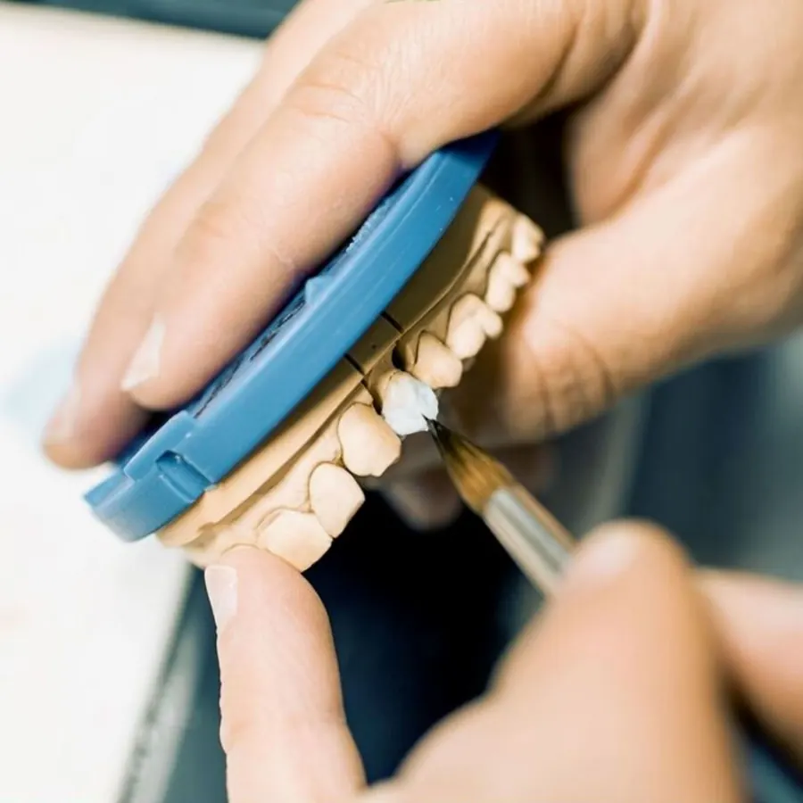

Kalıcı bir diş,acele etmeden.
İmplant kararını, her aşamayı önceden görerek verin. Randevu masasında konuyu, dişi ve günü seçin; mesajınız hazır.
İmplant tek günlük bir işlem değil, birkaç aşamalı bir yolculuk. Bu sayfa her aşamayı sade bir dille anlatır; karar, muayeneden sonra hekimle birlikte verilir.

Önce görüntü,
sonra plan.
Röntgen ve muayene bulguları birlikte değerlendirilir; implantın yeri, sayısı ve aşamaları planlanır. Seçenekler size ekranda anlatılır.

Steril koşul,
sakin bir seans.
İmplant lokal anestezi altında yerleştirilir. Aletlerin sterilizasyonu bu işin görünmeyen ama en önemli parçasıdır; yayında kendi sterilizasyon alanınızın fotoğrafı durur.

İyileşme,
ardından diş.
İmplantın kemikle kaynaşması beklenir; süre kişiye göre değişir. Ardından kron hazırlanır, takılır ve kapanış ayarlanır.
İmplantın yanında.
Metinler genel bilgilendirmedir; yayındakileri siz onaylarsınız. Başlığa dokunun, açılsın.

Kök, bağlantı, kron.
Konu, diş, gün: mesaj hazır.

Uzaktan mı geliyorsunuz?
İmplant birkaç ziyaret ister. İlçeden ya da başka ilden gelenler, muayene ve kontrolleri art arda planlamak için buradan tek mesajla yazabilir.
WhatsApp'tan sorSırakapılar, Selçuk Caddesi 37.
- Adres
- Sırakapılar, Selçuk Cd. No:37, Merkezefendi / Denizli
- 0531 575 83 32
- Sabit hat
- 0258 263 96 87
- Çalışma saatleri
- Sizden alınıp eklenecek
İçeriden kareler.




Sorunuz mu var? Yazın.
Sağlık tanıtım kurallarına uygun: bu sayfada fiyat, kampanya, hasta yorumu ya da öncesi-sonrası görsel yoktur. Sorularınızı doğrudan hekime iletirsiniz.